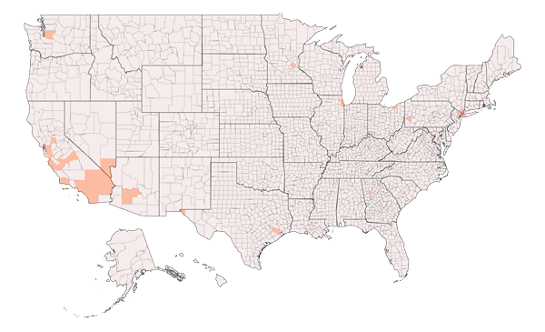

People overdosed in your area in 2017
1970-2017
Lack of awareness leaves issues in the dark – unseen, unknown, un-addressable – leaving those who deal with these very real and very challenging situations in their lives feeling isolated, broken, or like their struggle may never end.
TweetLack of awareness leaves issues in the dark – unseen, unknown, un-addressable – leaving those who deal with t
Logo
Image